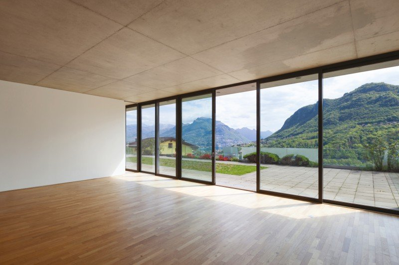
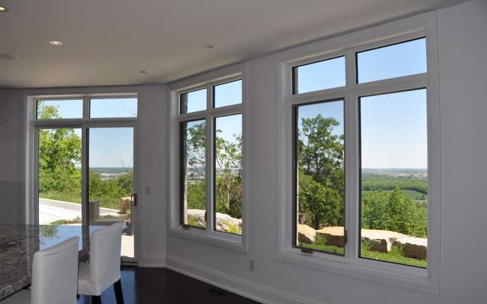

<!doctype html>
<html lang="en">
<head>
  <meta charset="UTF-8" />
  <meta name="viewport" content="width=device-width, initial-scale=1.0" />
  <title>European Windows & Doors for Custom Homes | Passive House, Modern Architecture | Crystal Ball</title>
  <meta name="description" content="High-performance European windows, lift & slide doors, and large-format glazing for architects and custom home builders in Canada. Passive House, Net Zero, modern architectural homes." />

  <link rel="icon" type="image/png" href="img/Crystal-Ball-Full-Color-Vertical-scaled.png" />
  <link rel="apple-touch-icon" href="img/Crystal-Ball-Full-Color-Vertical-scaled.png" />
  <link rel="canonical" href="https://curious-concha-f11e49.netlify.app/architects-custom-builders.html" />

  <meta property="og:type" content="website" />
  <meta property="og:site_name" content="Crystal Ball Windows & Doors" />
  <meta property="og:title" content="European Windows & Doors for Custom Homes | Passive House, Modern Architecture | Crystal Ball" />
  <meta property="og:description" content="High-performance European windows, lift & slide doors, and large-format glazing for architects and custom home builders in Canada. Passive House, Net Zero, modern architectural homes." />
  <meta property="og:image" content="img/82-Wilson-Ave.-Kitchener-Ontario-1.jpeg" />
  <meta property="og:url" content="https://curious-concha-f11e49.netlify.app/architects-custom-builders.html" />

  <meta name="twitter:card" content="summary_large_image" />
  <meta name="twitter:title" content="European Windows & Doors for Custom Homes | Crystal Ball" />
  <meta name="twitter:description" content="High-performance European windows, lift & slide doors, and large-format glazing for architects and custom home builders in Canada." />
  <meta name="twitter:image" content="img/82-Wilson-Ave.-Kitchener-Ontario-1.jpeg" />

  <link rel="preconnect" href="https://fonts.googleapis.com">
  <link rel="preconnect" href="https://fonts.gstatic.com" crossorigin>
  <link href="https://fonts.googleapis.com/css2?family=Montserrat:ital,wght@0,200..900;1,200..900&display=swap" rel="stylesheet">
  <script src="https://cdn.tailwindcss.com"></script>
  <script crossorigin src="https://unpkg.com/react@18/umd/react.development.js"></script>
  <script crossorigin src="https://unpkg.com/react-dom@18/umd/react-dom.development.js"></script>
  <script src="https://unpkg.com/@babel/standalone/babel.min.js"></script>
  <script>
    tailwind.config = { theme: { extend: {
      colors: { ink: '#F2EDE9', obsidian: '#F9FAFB', graphite: '#F3F4F6', glass: '#6B7280', frost: '#EAF7FA', silver: '#4D4D4D', line: 'rgba(0,0,0,0.1)', canvas: '#F2EDE9', charcoal: '#4D4D4D', darkheading: '#1A1A1A', accentblue: '#6B7280' },
      fontFamily: { montserrat: ['Montserrat', 'sans-serif'] },
      boxShadow: { glow: '0 0 25px rgba(107, 114, 128, 0.1)', glass: 'inset 0 0 18px rgba(255,255,255,0.7), 0 18px 60px rgba(0,0,0,0.06)' },
    } } };
  </script>
  <link rel="stylesheet" href="styles.css">
</head>

<body class="noise font-montserrat">
  <div id="root"></div>

  <script src="shared.js" type="text/babel"></script>

  <script type="text/babel">
    const { useState, useRef, useEffect } = React;
    const { TextReveal, GlassReveal, Header, Footer, BottomCTA } = window;

    function Hero() {
      return (
        <section className="relative bg-canvas min-h-[80vh] pt-32 pb-20 px-6">
          <div className="mx-auto max-w-7xl relative z-10">
            <div className="max-w-4xl">
              <TextReveal><p className="text-[14px] font-bold tracking-[0.2em] text-glass uppercase">ARCHITECTS & CUSTOM BUILDERS</p></TextReveal>
              <TextReveal delay={100}><h1 className="mt-5 text-5xl font-light leading-[1.05] tracking-[0.12em] md:text-7xl text-[#4D4D4D]">THE SYSTEM<br/>MAKES THE<br/>ARCHITECTURE.</h1></TextReveal>
              <TextReveal delay={200}><div className="my-8 h-1 w-16 bg-[#4D4D4D]/80"></div></TextReveal>
              <TextReveal delay={300}><p className="text-xl text-charcoal leading-relaxed font-medium">For architects and custom home builders working at the upper end of residential — where the wall becomes glass, the opening becomes the room, and the envelope has to perform in real Canadian weather — Crystal Ball supplies European-engineered systems that meet the design.</p></TextReveal>
              <TextReveal delay={400}>
                <div className="mt-10">
                  <a href="contact.html?inquiry=residential" className="group relative inline-flex items-center justify-center overflow-hidden bg-darkheading px-8 py-4 text-[14px] font-bold tracking-[0.2em] text-white uppercase shadow-sm outline-none">
                    <span className="absolute inset-0 w-full h-full bg-charcoal -translate-x-full transition-transform duration-500 ease-[cubic-bezier(0.77,0,0.175,1)] group-hover:translate-x-0 z-0"></span>
                    <span className="relative z-10">DISCUSS A CUSTOM PROJECT</span>
                  </a>
                </div>
              </TextReveal>
            </div>

            <div className="mt-20 grid gap-12 md:grid-cols-2 items-center">
              <GlassReveal delay={300} className="relative h-[500px] w-full">
                <div className="h-full w-full border border-black/10 overflow-hidden shadow-xl">
                  
                </div>
              </GlassReveal>
              <div>
                <TextReveal delay={400}><p className="text-[14px] font-bold tracking-[0.2em] text-glass uppercase">WHO THIS IS FOR</p></TextReveal>
                <TextReveal delay={500}><h3 className="mt-3 text-3xl font-light text-[#4D4D4D] mb-6">When standard residential windows aren't the answer.</h3></TextReveal>
                <TextReveal delay={600}><p className="text-[15px] leading-8 text-[#4D4D4D]/80 mb-6">You are not looking for stock fenestration. You are looking for systems that:</p></TextReveal>
                <ul className="space-y-3">
                  {[
                    'Carry large-format glazing without compromising performance',
                    'Operate cleanly at scale — Tilt & Turn, Lift & Slide, Bi-fold',
                    'Hit Passive House or Net Zero targets without retrofitting around them',
                    'Look the way the architecture intends — narrow sightlines, minimal frame',
                    'Survive Canadian winters and shoulder-season condensation cycles',
                  ].map((t, i) => (
                    <TextReveal key={t} delay={700 + i * 70}><li className="flex items-start text-[15px] font-medium text-[#4D4D4D]"><span className="mr-3 mt-1 text-glass">■</span>{t}</li></TextReveal>
                  ))}
                </ul>
              </div>
            </div>
          </div>
        </section>
      );
    }

    function Systems() {
      const items = [
        { title: 'Tilt & Turn Windows', body: 'Inward-opening European system. Superior air sealing. Two operations from a single hardware set. The default choice for performance-driven custom homes.' },
        { title: 'Lift & Slide Doors', body: 'Multi-panel glazed walls that operate at scale. Engineered for thermal performance, not just visual effect.' },
        { title: 'Bi-fold Doors', body: 'Indoor-outdoor opening at residential scale.' },
        { title: 'Large-Format Fixed & Specialty Glazing', body: 'Architectural openings without performance compromise.' },
        { title: 'Casement & Awning', body: 'North American configurations when project context calls for them — at European performance levels.' },
      ];
      return (
        <section className="bg-obsidian border-t border-black/10 px-6 py-28 relative">
          <div className="mx-auto max-w-7xl">
            <div className="grid gap-12 lg:grid-cols-[1fr_2fr] items-start mb-16">
              <div>
                <TextReveal><p className="text-[14px] font-bold tracking-[0.2em] text-glass uppercase">SYSTEM STRENGTHS</p></TextReveal>
                <TextReveal delay={100}><h2 className="mt-3 text-3xl font-light text-[#4D4D4D] md:text-5xl">Systems built for the design.</h2></TextReveal>
                <GlassReveal delay={200} className="relative h-[280px] w-full mt-8">
                  <div className="h-full w-full border border-black/10 overflow-hidden shadow-sm">
                    
                  </div>
                </GlassReveal>
              </div>
              <div className="grid gap-4">
                {items.map((it, i) => (
                  <TextReveal key={it.title} delay={i * 80}>
                    <div className="border border-black/10 bg-white p-6 hover:border-glass transition">
                      <h4 className="font-bold text-[#1A1A1A] tracking-wider mb-2">{it.title}</h4>
                      <p className="text-sm leading-6 text-[#4D4D4D]/80">{it.body}</p>
                    </div>
                  </TextReveal>
                ))}
              </div>
            </div>
            <a href="products.html" className="inline-block text-[13px] font-bold tracking-[0.2em] text-darkheading uppercase hover:text-glass transition">See full system range →</a>
          </div>
        </section>
      );
    }

    function PassiveHouse() {
      const items = [
        { title: 'Thermal performance', body: 'Frame and glass U-values, condensation resistance.' },
        { title: 'Air infiltration', body: 'Sealing performance for tight envelopes.' },
        { title: 'Glazing assemblies', body: 'Triple glazing, low-e coatings, warm-edge spacers.' },
        { title: 'Hardware durability', body: 'Operation cycles that hold up over the life of the home.' },
      ];
      return (
        <section className="bg-ink border-t border-black/10 px-6 py-28 relative">
          <div className="mx-auto max-w-7xl">
            <div className="grid gap-12 lg:grid-cols-2 items-start">
              <div>
                <TextReveal><p className="text-[14px] font-bold tracking-[0.2em] text-glass uppercase">PERFORMANCE</p></TextReveal>
                <TextReveal delay={100}><h2 className="mt-3 text-3xl font-light text-[#4D4D4D] md:text-5xl">Passive House.<br/>Net Zero.<br/>Cold-climate.</h2></TextReveal>
                <TextReveal delay={200}><p className="mt-6 text-[15px] leading-8 text-[#4D4D4D]/80">Every system supplied for residential is evaluated against:</p></TextReveal>
                <div className="mt-8 space-y-5">
                  {items.map((it, i) => (
                    <TextReveal key={it.title} delay={300 + i * 80}>
                      <div className="border-l-2 border-glass pl-5 py-2">
                        <h4 className="font-bold text-[#1A1A1A] tracking-wider mb-1">{it.title}</h4>
                        <p className="text-sm leading-6 text-[#4D4D4D]/80">{it.body}</p>
                      </div>
                    </TextReveal>
                  ))}
                </div>
                <TextReveal delay={800}><p className="mt-8 text-[15px] font-bold text-[#1A1A1A]">For Passive House and EnerPHit projects, we work to the actual certification criteria — not approximations.</p></TextReveal>
              </div>
              <GlassReveal delay={100} className="relative h-[500px] w-full">
                <div className="h-full w-full border border-black/10 overflow-hidden shadow-xl">
                  
                </div>
              </GlassReveal>
            </div>
          </div>
        </section>
      );
    }

    function WithArchitects() {
      const items = [
        'System options against the design language — sightline, mullion, finish',
        'Performance targets translated into product specification',
        'Coordination with structural, mechanical, and air barrier scope',
        'Shop drawings reviewed against architectural intent',
        'Substitution review when project budget reshapes the scope',
      ];
      return (
        <section className="bg-obsidian border-t border-black/10 px-6 py-28 relative">
          <div className="mx-auto max-w-7xl">
            <div className="max-w-3xl">
              <TextReveal><p className="text-[14px] font-bold tracking-[0.2em] text-glass uppercase">WORKING WITH ARCHITECTS</p></TextReveal>
              <TextReveal delay={100}><h2 className="mt-3 text-3xl font-light text-[#4D4D4D] md:text-5xl">Specification support that respects the design intent.</h2></TextReveal>
              <TextReveal delay={200}><p className="mt-6 text-[15px] leading-8 text-[#4D4D4D]/80">We engage early, on the architect's terms:</p></TextReveal>
            </div>
            <ul className="mt-10 grid gap-4 md:grid-cols-2">
              {items.map((t, i) => (
                <TextReveal key={t} delay={i * 70}>
                  <li className="border border-black/10 bg-white p-6 hover:border-glass transition text-[15px] font-medium text-[#4D4D4D] flex items-start"><span className="mr-3 mt-1 text-glass">■</span>{t}</li>
                </TextReveal>
              ))}
            </ul>
            <TextReveal delay={500}><p className="mt-10 text-[16px] font-bold text-[#1A1A1A] max-w-3xl">This is not "value engineering" the design. It is matching the right system to the right opening.</p></TextReveal>
          </div>
        </section>
      );
    }

    function WithBuilders() {
      const items = [
        'Rough opening detailing',
        'Air and water continuity at the window perimeter',
        'Anchoring strategies for oversized glazing',
        'Thermal break continuity',
        'Installation oversight available under Supply & Install',
        'Post-install verification on critical assemblies',
      ];
      return (
        <section className="bg-ink border-t border-black/10 px-6 py-28 relative">
          <div className="mx-auto max-w-7xl">
            <div className="grid gap-12 lg:grid-cols-2 items-center">
              <GlassReveal className="relative h-[500px] w-full">
                <div className="h-full w-full border border-black/10 overflow-hidden shadow-xl">
                  
                </div>
              </GlassReveal>
              <div>
                <TextReveal><p className="text-[14px] font-bold tracking-[0.2em] text-glass uppercase">WORKING WITH CUSTOM BUILDERS</p></TextReveal>
                <TextReveal delay={100}><h2 className="mt-3 text-3xl font-light text-[#4D4D4D] md:text-5xl">Installation discipline that protects the wall.</h2></TextReveal>
                <TextReveal delay={200}><p className="mt-6 text-[15px] leading-8 text-[#4D4D4D]/80">For builders managing the envelope as a system, not a checklist:</p></TextReveal>
                <ul className="mt-6 space-y-3">
                  {items.map((t, i) => (
                    <TextReveal key={t} delay={300 + i * 70}><li className="flex items-start text-[15px] font-medium text-[#4D4D4D]"><span className="mr-3 mt-1 text-glass">■</span>{t}</li></TextReveal>
                  ))}
                </ul>
              </div>
            </div>
          </div>
        </section>
      );
    }

    function Heritage() {
      const items = [
        'Heritage-sensitive replacement specifications',
        'Sightline matching against historic profiles',
        'Performance upgrades within design constraints',
        'Coordination with heritage consultants and approvals',
      ];
      return (
        <section className="bg-obsidian border-t border-black/10 px-6 py-28 relative">
          <div className="mx-auto max-w-7xl">
            <div className="max-w-3xl mb-12">
              <TextReveal><p className="text-[14px] font-bold tracking-[0.2em] text-glass uppercase">ARCHITECTURALLY SIGNIFICANT HOMES</p></TextReveal>
              <TextReveal delay={100}><h2 className="mt-3 text-3xl font-light text-[#4D4D4D] md:text-5xl">Heritage performance, modern execution.</h2></TextReveal>
              <TextReveal delay={200}><p className="mt-6 text-[15px] leading-8 text-[#4D4D4D]/80">When the home is worth keeping and the windows are at end of life, the replacement specification matters more than usual. We support:</p></TextReveal>
            </div>
            <ul className="grid gap-4 md:grid-cols-2">
              {items.map((t, i) => (
                <TextReveal key={t} delay={i * 70}>
                  <li className="border border-black/10 bg-white p-6 hover:border-glass transition text-[15px] font-medium text-[#4D4D4D] flex items-start"><span className="mr-3 mt-1 text-glass">■</span>{t}</li>
                </TextReveal>
              ))}
            </ul>
          </div>
        </section>
      );
    }

    function App() {
      return (
        <React.Fragment>
          <Header currentPage="markets" />
          <main className="min-h-screen">
            <Hero />
            <Systems />
            <PassiveHouse />
            <WithArchitects />
            <WithBuilders />
            <Heritage />
            <BottomCTA />
          </main>
          <Footer />
        </React.Fragment>
      );
    }

    ReactDOM.createRoot(document.getElementById('root')).render(<App />);
  </script>
</body>
</html>
